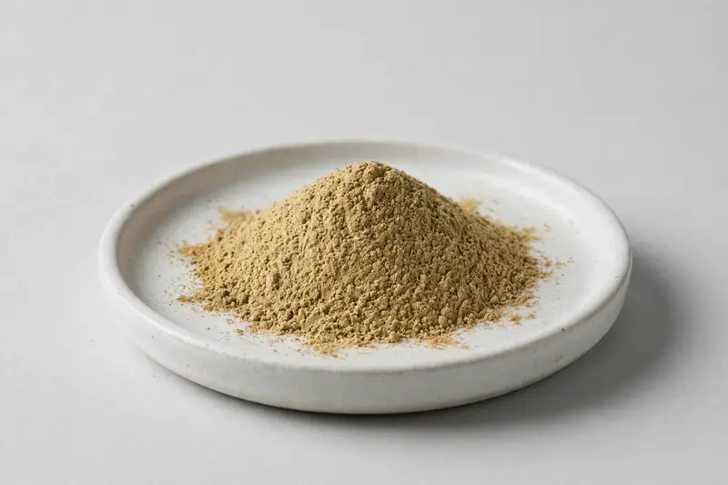

Ajwain — aromatic seed botanical for digestive-positioned formulations.

Overview
Ajwain extract is a botanical powder derived from Trachyspermum ammi seed, standardized around thymol, the volatile marker that drives most buyer interest. Demand comes mainly from supplement and traditional-formulation brands building digestive-positioned lines. As a Xi'an-based trading company, we source through partner producers and confirm feasibility against each buyer's target spec, so grades and documentation are matched before any offer.
Specifications below reflect commonly requested options in the market — not a stock list. Share your target spec and we'll confirm exactly what we can supply, honestly.
| Specification | Details |
|---|---|
| Botanical identity | Ajwain seed extract powder (Trachyspermum ammi) |
| Marker compound | Commonly requested spec grades: thymol content; actual specs confirmed on inquiry |
| Appearance | Light brown to yellowish-brown fine powder |
| Mesh size | Typically 80–100 mesh (confirm per inquiry) |
| Testing | COA/TDS arranged on request; scope agreed per your spec |
Applications
Documentation
We don't claim in-house labs or certifications we don't hold. COA and TDS documents can be arranged on request, and testing scope is agreed against your specification before supply.
FAQ
Related products
Theobroma cacao
Key marker: Theobromine 10-20%
View specs →Codonopsis pilosula
Key marker: 10:1 or polysaccharides
View specs →Rehmannia glutinosa
Key marker: 10:1 or catalpol
View specs →Chlorophytum borivilianum
Key marker: Saponin Content
View specs →Phyllanthus niruri
Key marker: Phyllanthin Content
View specs →Send your target spec and volumes — we'll respond with a tailored quotation.
Request a Quote